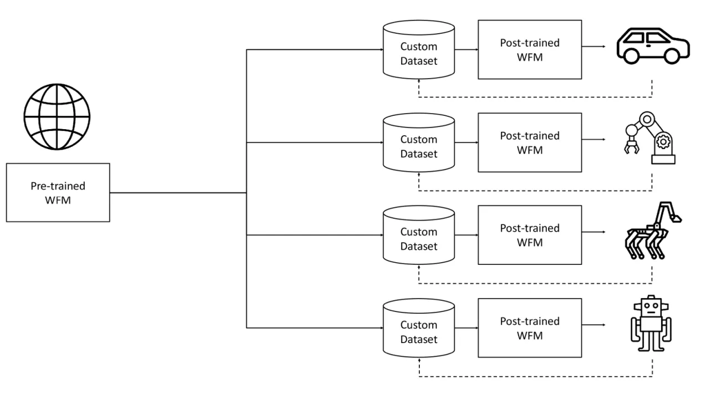
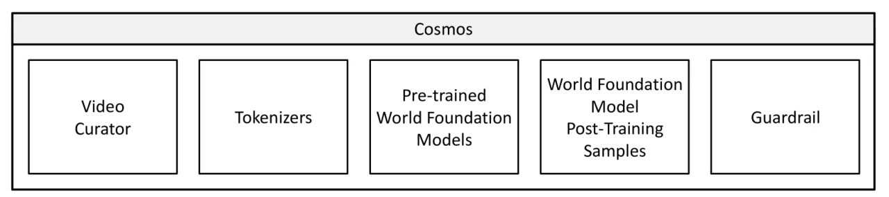
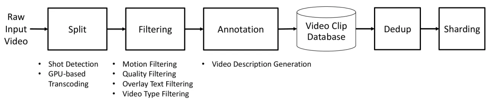
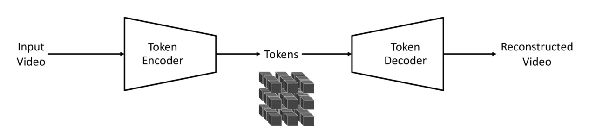
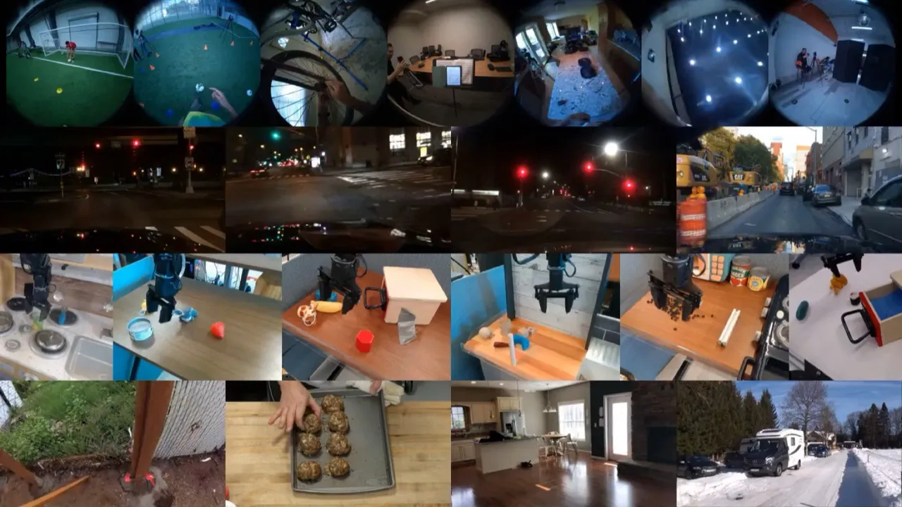
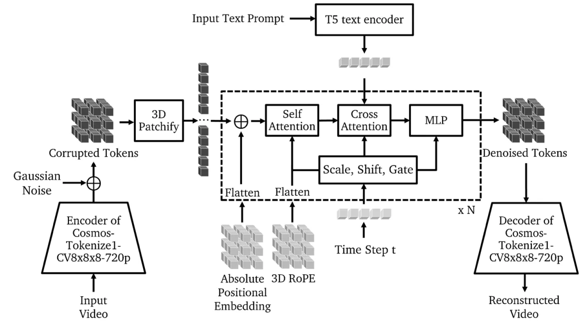

物理 AI（Physical AI）需要"先在数字世界中训练"。Cosmos 是 NVIDIA 发布的世界基础模型（World Foundation Model, WFM）平台， 提供视频数据处理流水线、预训练 WFM（扩散与自回归两大家族）、后训练示例以及高效视频分词器， 帮助开发者为机器人操作、自动驾驶等场景构建定制化世界模型，并以开源方式发布全部模型权重。
当前 Physical AI 发展缓慢，核心瓶颈在于：现实世界中带标注的观测—动作交互数据极度稀缺，且采集成本极高。 世界模型（World Model）可以作为物理世界的"数字孪生"，让智能体在仿真中安全、廉价地生成海量训练数据， 从而打破数据壁垒、加速 policy 的迭代。
"Physical AI needs to be trained digitally first. It needs a digital twin of itself, the policy model, and a digital twin of the world, the world model."

Cosmos 平台由四个相互配合的模块组成：① 视频数据飞轮（Video Curator）； ② Cosmos Tokenizer（连续/离散两种，支持图像与视频联合训练）； ③ 两大预训练 WFM 家族（扩散式 Diffusion WFM 与自回归 Autoregressive WFM）； ④ 面向机器人、自动驾驶的后训练 recipe 与安全护栏。



预训练 WFM 可通过后训练适配三类典型 Physical AI 场景：
论文在 TokenBench（作者新建的 benchmark，涵盖 500 段视频：机器人操作 BridgeData V2、自动驾驶 BDD100K、 第一视角 EgoExo-4D 与通用网络视频 Panda-70M）及 MS-COCO 上评测分词器， 并展示扩散与自回归 WFM 的定性生成结果。
| 数据集 / 压缩比 | 类型 | PSNR (dB) ↑ | SSIM ↑ | rFVD ↓ |
|---|---|---|---|---|
| DAVIS · 4×8×8 | Continuous (CV) | 35.85 | 0.920 | 10.05 |
| Discrete (DV) | 32.97 | 0.840 | 53.44 | |
| MS-COCO · 8×8 | Continuous (CV) | 32.79 | 0.824 | 1.874 rFID |
| Discrete (DV) | 31.36 | 0.714 | 4.133 rFID |
论文还报告，Cosmos Tokenizer 推理速度比此前方法快 2×～12×， 并以此作为分词器效率的核心亮点。


Cosmos 在输入端部署 Pre-Guard（关键词拦截 + Aegis 护栏模型过滤有害 prompt）； 在输出端部署 Post-Guard（视频内容安全过滤 + 人脸模糊）。 两套护栏均经过形式化红队（Red Team）对抗测试。
论文原文："Autoregressive models generate videos sequentially, which can lead to error accumulation over longer generation horizons and may result in degraded quality for extended video sequences." 即自回归式 WFM 在长序列预测时，逐 token 生成导致误差逐帧积累，长视频质量下降。
预训练使用 10,000 块 NVIDIA H100 GPU，历时约三个月。 如此规模的算力门槛使大多数研究者和机构无法从头复现预训练过程， 只能在开放权重基础上进行后训练。
论文自述"the world foundation model problem is still far from being solved"， 当前生成视频可能出现物理规律违反（穿模、重力异常等）， 距离真正可靠的物理世界孪生仍需大量后续研究。
开源发布附带 Pre-Guard 与 Post-Guard，但作者明确表示安全措施仍在持续演进， 护栏并非一次性的完整解决方案，对抗性 prompt 的覆盖率存在盲区。